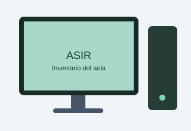

Características generales
Ficha técnica elaborada a partir de la información obtenida mediante comandos de PowerShell en Windows.
- Fabricante: Micro-Star International (MSI)
- Modelo: MS-7D48
- Sistema operativo: Windows 11 Pro de 64 bits
- Uso: equipo para prácticas de ASIR
Componentes del equipo
- Procesador
- Intel Core i5-13400 de 13.ª generación
- Núcleos y procesadores lógicos
- 10 núcleos y 16 procesadores lógicos
- Memoria RAM
- 15,79 GiB detectados por el sistema
- Almacenamiento
- Crucial CT240BX500SSD1, 240 GB comerciales
- Tarjeta de red
- Realtek PCIe GbE Family Controller
Imagen del equipo

La imagen es ilustrativa y no representa necesariamente el modelo físico exacto.
Pasos para revisar el equipo
- Comprobar el modelo y el fabricante.
- Consultar el procesador y la memoria RAM.
- Comprobar el almacenamiento disponible.
- Verificar el sistema operativo y la tarjeta de red.
- Actualizar los datos del inventario.
Estado: características principales identificadas mediante PowerShell.